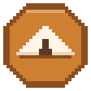

第一学期 · 第 7 周 · B6Semester 1 · Week 7 · B6
我的数字工作台My Digital Workspace
把文件、时间与笔记安排好，为下一阶段的学习做好准备。Organise your files, time and notes for the next stage of learning.
进度来自你在每一关勾选的清单，只保存在这个浏览器里。它不是你的分数——分数由导师按量规给。Progress comes from the checklists you tick on each tier's page, saved only in this browser. It is not your score — your mentor scores with the rubric.
这周做什么？从起点营地开始What this week? Start at Base Camp

必做Required
起点营地Base Camp
- 搭好四角，写四行工作台记录Set up four corners; write a four-line workspace record
- 写 B1–B6 基本功清单（六行）Write the six-line B1–B6 inventory
- 发布选课页：主修 + 探索、理由、时段Publish course choices: core + explore, reasons, study slot
- 发布、登记两个链接、备份、写日志Publish, register two links, back up, write your log
选做挑战Optional challenge
山脊Ridge Trail
- 学快捷键与视频通话礼仪Learn shortcuts and video-call manners
- 录约 1 分钟导览，展示四角Record a ~1-minute tour of all four corners
- 更新作品集，通知导师Update the Portfolio; notify your mentor
先完成前一关的清单；随时可预览。本地勾选不决定分数。Finish the earlier checklist first; preview anytime. Local ticks do not decide your score.
打开步骤 →Open the steps →选做挑战Optional challenge
登顶Summit
- 用无隐私的练习文件测试恢复Test recovery with a non-private practice file
- 写实测结果和下次备份规则Record the result and your next backup rule
- 更新原页，通知导师Update the same page; notify your mentor
先完成前一关的清单；随时可预览。本地勾选不决定分数。Finish the earlier checklist first; preview anytime. Local ticks do not decide your score.
打开步骤 →Open the steps →三关怎么玩How the tiers work
起点营地达标得 3 分，是 5 分里的及格线；山脊、登顶选做。导师按量规评分：起点营地至少 2 分才计山脊；山脊至少 1 分才计登顶。公开学习者用同一量规自评。Base Camp meeting the rubric earns 3 of 5 points, the pass mark; Ridge and Summit are optional. Mentors score with the rubric: Base Camp must earn at least 2 before Ridge counts; Ridge at least 1 before Summit counts. Open learners self-score with the same rubric.
总预算 80 + 25 + 15 = 120 分钟，含指定视频片段、发布和日志；自测及拓展另为选做。两份交付：作品集中的工作台记录与清单，以及单独的“我的外部课程”页。挑战只更新原作品集页。The budget is 80 + 25 + 15 = 120 minutes, including the specified clips, publishing and log. Quiz and extensions are optional extras. Two deliverables: the workspace record and inventory on your Portfolio, and a separate “My external course” page. Challenges update the same Portfolio page.
徽章来自本浏览器的清单，表示已准备好接受评分；它不是成绩，也不会跨设备同步。山路只是任务顺序的比喻，勾选不代表实际掌握。Badges come from this browser’s checklists and mean ready for review; they are not grades and do not sync across devices. The mountain stands for task order; ticking a box does not demonstrate mastery.
独立与隐私Independent work and privacy
本周不使用生成式 AI；清单和选课理由由自己写。家长一起挑时段、讨论选课，欢迎。新注册先告诉家长；需要手机号时，先征得家长同意。共用电脑用完登出。No generative AI this week; write your inventory and course reasons yourself. Parents may help weigh choices and study times. Tell a parent before new registrations; obtain their agreement before supplying a phone number. Sign out after using a shared computer.
发布前：不放真名、正脸照片、学校全名或可定位的信息。屏幕里隐藏邮箱、通知和别人的日程。若误放，先撤下或遮盖，再发布；不因隐私失误扣分。Before publishing: no real names, face photos, full school names or locating details. Hide email addresses, notifications and other people’s appointments. If anything slips through, remove or mask it and republish; privacy slips cost no points.